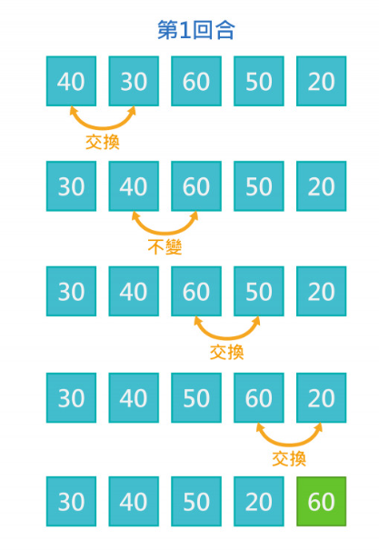
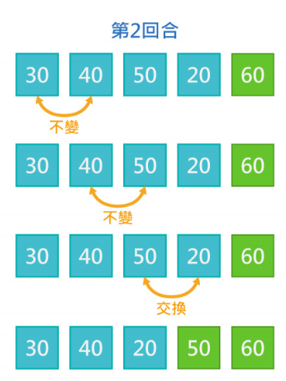

輸入5張牌，輸出牌型的類別編號，每張牌由牌面與花色組成，牌面與花色的表示如下：
牌面： A、2~10、J、Q、K
花色：S (Spade,黑桃),H (Heart,紅心),D (Diamond,方塊), C (Club,梅花)
例如：7S 表示黑桃7
牌型編號(編號越大代表牌型越大)：
(1) High Card : 單一張牌。
(2) One pair: 兩張牌數字一樣。
(3) Two pairs : 兩組 Pair 的牌。
(4) Three of a kind : 三張牌數字一樣。
(5) Straight : 數字連續的五張牌，頭尾相接亦視為Straight。例如：
[2, 3, 4, 5, 6],..,[Q,K , A, 2, 3], [K , A, 2, 3, 4], [A, 2, 3, 4, 5]。
(6) Flush : 五張同一花色的牌。
(7) Full House : Three of a Kind 加一個 Pair。
(8) Four of a kind: : 四張牌數字一樣。
(9) Straight flush : 數字連續的五張牌且花色一樣。
【特別要求】
1. 如果一副牌中有不合法的輸入，像是不存在的牌面、花色，則輸出 "Error input"。
2. 如果一副牌中有重複的牌出現，即一副牌當中有兩張以上牌面跟花色一模一樣，則輸出"Duplicate deal"。
3. 如果"Error input"和"Duplicate deal"同時發生，則輸出"Error input"。
| 輸入說明 | 輸出說明 |
|---|---|
| 輸入一行字串，包含五張牌，每張牌中間以空白隔開。 範例輸入說明： 7S 7H 7D 6C 6S （表示 黑桃7 紅心7 方塊7 梅花6 黑桃6） |
1. 輸出一個整數（1~9），表示最大的牌型編號。 範例輸出說明： 7 （對應牌型為編號7的Full house） |
| Sample Input | Outpue |
|---|---|
| 5S 5H 5D 5C 5R | Error input |
| 6S 6H 6D 6C 6S | Duplicate deal |
| AS 2H 3D 5C 6SS | Error input |
| AS 5C 3D 5C 6SS | Error input |
| AS 3S 5S 7S 9S | 6 |
| AS 3S 5S 7S 9D | 1 |
| JS QS AS 10S KS | 9 |
| AS JH JD AD 5C | 3 |
| 6S 4S 6H 10S 2D | 2 |
| 3S 3H 9D 3D 3C | 8 |
| AS 8D 5C 8C 8H | 4 |
| Sample Input | Outpue |
|---|---|
| JS 9S KS 10S QD | 5 |
| 7S 7H 7D 6C 6S | 7 |
| 7S 7H 7D 6C 6S | 7 |
def main():
#輸入五張牌，並用空格分割字串
#['牌面花色1','牌面花色2','牌面花色3','牌面花色4','牌面花色5']
#Init()會將原本的list轉換成二維list
#[['牌面1','花色1'],['牌面2','花色2'],['牌面3','花色3'],['牌面4','花色4'],['牌面5','花色5']]
player1 = Init(input().split(' '))
if(呼叫檢查錯誤的函式CheckError(player1)): #成立
print("Error input")
elif(呼叫檢查重複的函式CheckSelfDuplicate(player1)): #成立
print("Duplicate deal")
else:
#呼叫SortOrder()將player1的牌面由小到大排序
player1 = SortOrder(player1)
#呼叫判斷牌型的函式GetCardsType(player1)
#如果判斷牌型的回傳結果 小於 6 且 牌都同花色，result = 6
#否則result1就等於GetCardsType(player1)回傳的結果
result1 = 6 if GetCardsType(player1) < 6 and CheckFlush(player1)== 1 else GetCardsType(player1)
print(result1)
#把一維list:EX:['5D','2S','3D']變成二維list:[['5','D'],['2','S'],['3','D']]
def Init(arr):
for i in range(len(arr)):
arr[i] = [arr[i][???], arr[i][???]]
return arr
def CheckError(arr):
for i in range(len(arr)):
#如果輸入字串的第二個字元不是'S'、'H'、'D'、'C'
return 1
#如果輸入字串的第一個字元不是 2~10、A、J、Q、K
return 1
#如果輸入字串的第一個字元長度 >=2 且 != "10"
return 1
return 0
#檢查牌有沒有重複
def CheckSelfDuplicate(arr):
#利用雙層for迴圈讓j會遍歷到i後面的所有牌
#i=0、j=1、2、3、4
#i=1、j=2、3、4
#...
for i in range(0, len(arr)):
for j in range(i+1, len(arr)):
if(??? == ???):
return 1
return 0
def SortOrder(arr):
#使用氣泡排序法由小到大排序arr每一個子list的第一個元素
#將arr每一個子list的第一個元素(牌面)轉換為數字
for i in range(0, len(arr)):
#呼叫TransformValue()轉換牌面為int
arr[i][0] = TransformValue(arr[i][0])
return arr
判斷何種牌型的函式，會需要額外寫多個副程式來判斷!!!
def GetCardsType(arr):
#取得牌面的數量，重複的數字都算1張
#Ex:12345 -> 5、22345 -> 4、33356 -> 3、33445 -> 3 、33322 -> 2
quantity = GetQuantity(arr)
#取牌面的數字由小到大排序，存進變數compare
compare = [arr[0][0], arr[1][0], arr[2][0], arr[3][0], arr[4][0]]
if(quantity==5):
if(呼叫檢查數字連續CheckStraight() 且 檢查同花色CheckFlush()):
return 9
elif(呼叫檢查數字連續CheckStraight()):
return 5
else:
return 1
elif(quantity==4):
return 2
elif(quantity==3):
if(呼叫計算牌面有幾張重複的函式CountMaxRepeat(compare)，若有3張牌牌面相同):
return 4
else:
return 3
elif(quantity==2):
if(呼叫計算牌面有幾張重複的函式CountMaxRepeat(compare)，若有4張牌牌面相同):
return 8
else:
return 7
#檢查有沒有同花色
def CheckFlush(arr):
_set = set() #創建一個空集合
for i in range(0, len(arr)):
#利用集合的特性:重複的元素不會被添加進集合中
...
result = 1 if len(_set)==1 else 0
return result
#計算牌面數量(相同數字算一張)
def GetQuantity(arr):
_set = set() #創建一個空集合
for i in range(0, len(arr)):
#利用集合的特性:重複的元素不會被添加進集合中
...
return len(_set)
#檢查牌面有沒有連續
def CheckStraight(arr):
#列出特殊的連續牌型
specialRule = [[1,10,11,12,13], [1,2,11,12,13], [1,2,3,12,13], [1,2,3,4,13]]
#取出arr中的每個子list的第一個元素，也就是牌面
compare = [arr[0][0], arr[1][0], arr[2][0], arr[3][0], arr[4][0]]
if(compare in specialRule):
return 1
#檢查後一個牌面與前一個牌面是不是差1
if(...):
return 1
return 0
#計算有幾張牌的牌面一樣
def CountMaxRepeat(arr):
_max = 0
for i in range(0, len(arr)):
_max = ...
return _max
原理是從第一筆資料開始，逐一比較相鄰兩筆資料，如果兩筆大小順序有誤則做交換，反之則不動， 接者再進行下一筆資料比較，所有資料比較完第1回合後，可以確保最後一筆資料是正確的位置。
 n=5
第1回合比較了4次，n-1次
第2回合比較了3次，n-2次
第3回合比較了2次，n-3次
第4回合比較了1次，n-4次
總共比較了4回合，n-1回合
(n-1) + (n-2) + .... + 1 = n(n-1) / 2
平均時間複雜度為: O(n²)
arr = [40,30,60,50,20]
for i in range(0, len(arr)-1):
print("第",i+1,"回合:")
for j in range(0, len(arr)-1-i):
print("第",j+1,"次比較",arr[j],"和",arr[j+1])
if(arr[j]>arr[j+1]):
arr[j], arr[j+1] = arr[j+1], arr[j]
print("交換:",arr)
print("排序後:",arr)
集合 ( set ) 就像是「只有鍵，沒有值」的字典，一個集合裡所有的鍵都不會重複， 因為集合不會包含重複的資料的特性，常用來進行去除重複的字元、或判斷元素間是否有交集、聯集或差集之類的關聯性。
arr = [1,2,3,1,6]
_set = set() #創建一個空集合
for i in range(0, len(arr)):
_set.add(arr[i])
print(_set)
輸出：{1, 2, 3, 6}
def main():
#input().split(' ')會得到一個一維的字串list['牌面花色1','牌面花色2','牌面花色3','牌面花色4','牌面花色5']
#Init()會把一維list變成二維list[['牌面1','花色1'],['牌面2','花色2'],['牌面3','花色3'],['牌面4','花色4'],['牌面5','花色5']]
player1 = Init(input().split(' '))
if(CheckError(player1)==1):
print("Error input")
elif(CheckSelfDuplicate(player1)==1):
print("Duplicate deal")
else:
player1 = SortOrder(player1)
result1 = 6 if GetCardsType(player1) < 6 and CheckFlush(player1) == 1 else GetCardsType(player1)
print(result1)
def Init(arr):
for i in range(len(arr)):
#arr[i][0:-1]:會取到第0位到結尾的前一個字串(不包含結尾)，Ex:'10S'，就會取'10'
#arr[i][-1]:只會取結尾的，Ex:'S'
arr[i] = [arr[i][0:-1], arr[i][-1]]
return arr
def CheckError(arr):
for i in range(len(arr)):
if(not(arr[i][1]=='S' or arr[i][1]=='H' or arr[i][1]=='D' or arr[i][1]=='C')): #檢查輸入字串的第二個字元
return 1
if(not((arr[i][0]>='2' and arr[i][0]<='9') or arr[i][0]=='10' or arr[i][0]=='A' or arr[i][0]=='J' or arr[i][0]=='Q' or arr[i][0]=='K')):
return 1
if(len(arr[i][0])>=2 and arr[i][0]!="10"):
return 1
return 0
def CheckSelfDuplicate(arr):
for i in range(0, len(arr)):
for j in range(i+1, len(arr)):
if(arr[i][0]+arr[i][1] == arr[j][0]+arr[j][1]):
return 1
return 0
def SortOrder(arr):
for i in range(0, len(arr)-1):
for j in range(0, len(arr)-1-i):
if(TransformValue(arr[j][0])>TransformValue(arr[j+1][0])):
arr[j], arr[j+1] = arr[j+1], arr[j]
for i in range(0, len(arr)):
arr[i][0] = TransformValue(arr[i][0])
return arr
def TransformValue(ch):
if(ch=='A'):
return 1
elif(ch=='10'):
return 10
elif(ch=='J'):
return 11
elif(ch=='Q'):
return 12
elif(ch=='K'):
return 13
else:
#將字元轉換成整數型態，ord(ch)會傳回字元ch所對應的 ASCII 值，'0'~'9'對應ASCII的48~57
#Ex:'2' -> ASCII:50，50-48=2
return ord(ch) - 48
def GetCardsType(arr):
#取得牌面的數量，重複的數字都算1張
quantity = GetQuantity(arr)
#取排序好arr的牌面數字，存進變數compare
compare = [arr[0][0], arr[1][0], arr[2][0], arr[3][0], arr[4][0]]
#如果牌面數量5張
if(quantity==5):
#如果牌面連續 且 同花色(5張牌)
if(CheckStraight(arr)==1 and CheckFlush(arr)==1):
return 9
#否則如果單純牌面連續
elif(CheckStraight(arr)==1):
return 5
#否則都不是以上的，就是(1)High Card
else:
return 1
#否則如果，牌面數量4張
#兩張牌數字一樣
elif(quantity==4):
return 2
#否則如果，牌面數量3張
elif(quantity==3):
#如果牌面有3張相同
#三張牌數字一樣
if(CountMaxRepeat(compare)==3):
return 4
#兩組 Pair 的牌
else:
return 3
#否則如果，牌面數量2張
elif(quantity==2):
#如果牌面有4張相同
if(CountMaxRepeat(compare)==4):
return 8
#Three of a Kind 加一個 Pair(Ex:33322)
else:
return 7
#arr子list第一個元素的數量(利用集合的特性:重複的元素不會被添加進集合中)
def GetQuantity(arr):
_set = set() #創建一個空集合
for i in range(0, len(arr)):
_set.add(arr[i][0])
return len(_set)
def CheckStraight(arr):
specialRule = [[1,10,11,12,13], [1,2,11,12,13], [1,2,3,12,13], [1,2,3,4,13]]
compare = [arr[0][0], arr[1][0], arr[2][0], arr[3][0], arr[4][0]]
if(compare in specialRule):
return 1
if((compare[1]-compare[0]==1) and (compare[2]-compare[1]==1) and (compare[3]-compare[2]==1) and (compare[4]-compare[3]==1)):
return 1
return 0
#利用集合的特性:重複的元素不會被添加進集合中
#只會有1或0的結果
def CheckFlush(arr):
_set = set()
for i in range(0, len(arr)):
_set.add(arr[i][1])
result = 1 if len(_set)==1 else 0
return result
def CountMaxRepeat(arr):
_max = 0
for i in range(0, len(arr)):
_max = arr.count(arr[i]) if arr.count(arr[i])>_max else _max
return _max
if __name__ == '__main__':
main()